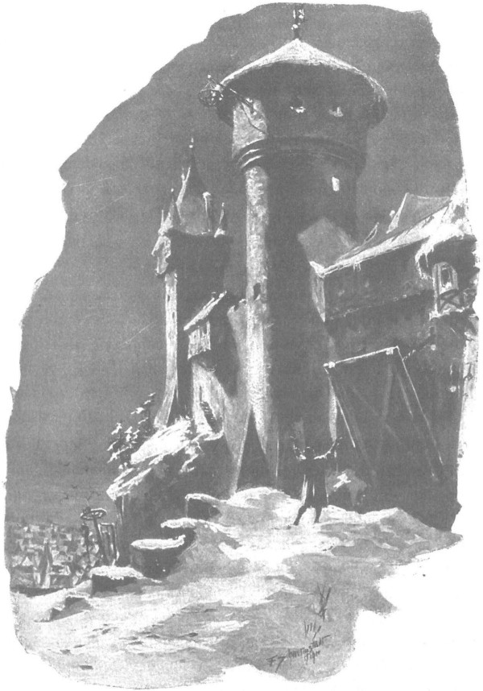

Khi bình minh bắt đầu soi tỏ những rặng cây, nhũ băng và những tảng đá vôi lăn lóc đây đó trên đồng, người dẫn đường thuê đang đi cạnh ngựa ông Jurand chợt dừng chân và bảo:
- Xin hãy cho tôi được nghỉ để thở lấy hơi, thưa ngài hiệp sĩ, hết cả hơi rồi. Trời ẩm ướt, lại dày sương quá, nhưng chẳng còn xa mấy nữa đâu…
- Hãy đưa ta ra đến quan lộ, rồi ngươi quay về cũng được. - Ông Jurand nói.
- Đường cái quan nằm bên phải khoảnh rừng thưa này, từ trên gò ngài sẽ thấy thành ngay bây giờ đấy ạ.
Nói đoạn, lão nông phu bắt đầu đập đập hai tay vào nách cho đỡ cóng bởi hơi giá lạnh ban mai, rồi ngồi xệp xuống một tảng đá, bởi cách làm ấm người kia càng khiến lão thở hổn hển hơn.
- Này, ngươi có biết ngài lãnh binh hiện đang có mặt trong thành hay không? - Ông Jurand hỏi.
- Ngài còn ở đâu được nữa khi đang ốm?
- Bị làm sao?
- Người ta bảo ngài bị các hiệp sĩ Ba Lan nện. - Lão nông phu đáp.
Trong giọng nói của lão có thể cảm thấy chút gì như hài lòng. Lão là dân dưới quyền bọn Thánh chiến, nhưng trái tim dân Mazury trong lồng ngực vẫn vui sướng trước ưu thế của các hiệp sĩ Ba Lan.
Lát sau, ông lão nói thêm:
- Hey! Các hiệp sĩ của chúng tôi cũng khỏe đấy, nhưng chơi được với họ thì còn là mệt!
Nhưng rồi vội đưa mắt liếc nhìn trang hiệp sĩ, ông lão như thể muốn kiểm tra lại xem lão có gặp chuyện gì chẳng lành chăng vì những lời vừa trót nhỡ mồm thốt ra, nên lão hỏi:
- Thưa hiệp sĩ, ngài nói tiếng của chúng tôi, vậy ngài không phải dân Đức chứ ạ?
- Không, - ông Jurand đáp, - ngươi hãy đưa ta đi tiếp đi.
Lão nông phu đứng lên, bước kề bên con ngựa. Dọc đường, thỉnh thoảng lão lại thò tay vào túi da móc ra một vốc hắc mạch chưa xay bỏ vào miệng, và sau khi làm dịu cơn đói lòng bằng cách ấy, lão liền giải thích tại sao mình ăn hạt sống. Đang mải bận bịu với nỗi bất hạnh và những suy tư của mình, ông Jurand thậm chí không nhận ra chuyện ấy.
- Ơn Chúa, dẫu chỉ là có vậy. - Lão nói. - Sống dưới ách các ông chủ người Đức nặng nề lắm thay! Họ đánh thuế ngũ cốc xay nặng đến nỗi người nghèo chỉ còn nước nhá hạt chưa xay như trâu bò. Hễ họ vớ được cối xay tay ở nhà nào, thì đàn ông liền bị gô cổ, tài sản bị tịch biên, cả con trẻ lẫn đàn bà họ cũng chẳng tha… Họ đâu còn biết sợ Chúa, sợ cha xứ, ngay đến cha xứ thành Wielborg mới vừa lên tiếng chỉ trích cũng đã bị họ xiềng cổ liền. Ôi! Nặng nề thay sống dưới ách người Đức! Nếu có ai dùng cối đá nghiền nắm hạt, phải giấu chui giấu nhủi nắm bột ấy dành đến Chúa nhật, chứ còn đến thứ Sáu thì vẫn phải nhằn hạt như chim chóc mà thôi, ơn Chúa cho được thế cũng đã là phúc lắm, chứ đến vụ giáp hạt, thì nắm ngũ cốc cũng chẳng còn… Cá thì không được phép đánh… Thú không được phép săn… Chứ đâu được như ở vùng Mazowsze.
Cứ thế, lão nông phu trên đất Giáo đoàn cứ ca cẩm mãi, nửa như nói với chính mình, nửa như nói với ông Jurand. Họ đã vượt hết quãng đồng trống rải rác những phiến đá vôi phủ dưới tuyết, bước vào một khu rừng mà trong ánh sáng tờ mờ của buổi bình minh nom như một người tóc bạc, tỏa ra làn hơi lạnh ẩm ướt, khắc nghiệt. Trời đã rạng hẳn, nếu không chắc ông Jurand cũng khó lòng vượt nổi con đường rừng chạy ngoằn ngoèo lên dốc, lại chật hẹp đến nỗi nhiều chỗ con ngựa chiến kềnh càng của ông phải khó khăn lắm mới len nổi qua những thân cây. Nhưng rồi chẳng mấy chốc rừng cũng hết, sau quãng thời gian dài bằng thì giờ đọc hết mấy bài kinh, họ lên đến một đỉnh gò đá trắng, chính giữa gò là con đường cái quan.
- Đường đây rồi, - lão nông phu bảo, - giờ thì tự ngài cũng có thể đi được rồi.
- Đi được rồi. - Ông Jurand nói. - Hỡi lão phu, ông trở lui đi.
Ông thò tay vào túi da buộc đằng trước yên, lấy một đồng tiền bạc trao cho người dẫn đường. Vốn quen nhận đòn roi hơn nhận quà tặng từ tay các hiệp sĩ Thánh chiến trong vùng, ông lão không dám tin vào mắt mình nữa. Vồ lấy đồng tiền, lão ghì trán vào bàn đạp chân của ông Jurand, đưa cả hai tay ôm ghì lấy.
- Ôi Giêsu, ôi Đức Mẹ, lạy Chúa tôi! - Ông lão kêu lên. - Chúa sẽ trả công cho ngài, kính thưa đại hiệp sĩ!
- Cầu lão được bằng an với Đức Chúa.
- Xin ân uy Chúa dẫn đường cho ngài. Thành Szczytno đang ở trước mặt ngài kia.
Nói đoạn, ông lão một lần nữa gục đầu vào bàn đạp, rồi đi khuất. Chỉ còn mỗi mình ông Jurand đứng lại trên đỉnh gò, đưa mắt theo hướng người nông phu vừa chỉ, nhìn xuống dải sương mù ẩm ướt xám xịt đang bao trùm thế gian. Sau màn sương ấy ẩn hình tòa thành thù nghịch mà bạo lực và nỗi bất hạnh đang dồn ông phải tới. Gần lắm, gần lắm rồi! Để rồi sau đó, điều gì phải xảy ra, phải thực hiện sẽ được xảy ra, được thực hiện…
Nghĩ thế, trong trái tim ông Jurand, bên cạnh sự lo lắng và nỗi bất an cho số phận của Danusia, bên cạnh sự sẵn sàng chuộc lại con gái từ tay kẻ thù, dù phải đổ ra chính dòng máu của mình, chợt nảy sinh cảm giác nhục nhã, đắng cay vô chừng, một cảm giác mới mẻ mà ông chưa từng biết đến. Đây, chính ông, hiệp sĩ Jurand, người mà chỉ nhắc đến tên cũng đủ làm hoảng sợ những gã lãnh binh vùng biên ải, giờ lại phải tới đây theo lệnh chúng để cúi đầu chịu tội. Ông - người đã từng chiến thắng, từng chà đạp lên bao thân xác chúng - giờ lại phải cảm thấy bị chiến bại và bị xéo giày. Thực ra chúng không thắng nổi ông trong chiến đấu, không phải bằng lòng dũng cảm và sức mạnh hiệp sĩ - nhưng dẫu sao ông vẫn cảm thấy mình thua cuộc. Và điều đó với ông quả là điều chưa từng thấy, khiến ông cảm thấy toàn bộ trật tự của gian thế như bị đảo lộn. Ông mà lại phải đi nộp mạng cho bọn hiệp sĩ Thánh chiến. Ông - người mà nếu không phải vì cứu Danusia, thì sẵn sàng đơn độc đương đầu với toàn bộ lực lượng của Giáo đoàn. Nào có hiếm gì những hiệp sĩ đơn thương độc mã, khi phải chọn lựa giữa nỗi ô nhục và cái chết, đã xốc thương xông vào tiến công cả đại quân? Nhưng ông cảm thấy lần này mình sẽ phải chịu ô nhục, và chỉ nghĩ đến điều đó thôi, trái tim ông như gào thét lên vì đau đớn, như con sói hú lên khi bị mũi tên xuyên thẳng vào thân.
Nhưng đó là một con người không chỉ có cơ thể mà cả tâm linh cũng bằng sắt thép. Ông đã biết bẻ gãy kẻ khác, nhưng ông cũng biết bẻ gãy chính mình.
“Ta sẽ không nhúc nhích khỏi đây,” ông tự nhủ, “trước khi ta xua đuổi hoàn toàn cơn giận dữ có thể khiến ta mất mạng mà không cứu được con.”
Và ông bắt đầu cuộc vật lộn với trái tim cứng rắn, với lòng căm hận và nỗi khát khao chiến đấu của mình. Giá có kẻ nào được trông thấy ông trên đỉnh gò kia, toàn thân đầy giáp phục, hoàn toàn bất động, trên lưng một con chiến mã to lớn - kẻ ấy sẽ bảo đó là một người khổng lồ được đúc bằng thép, và sẽ chẳng thể nào nhận ra rằng người hiệp sĩ đang đứng bất động ấy, lúc này đây đang phải trải qua trận chiến đấu căng thẳng gay go nhất trong đời mình. Ông cứ vật lộn với chính mình cho đến khi hoàn toàn thắng được, khi ông tin chắc rằng ý chí của ông sẽ không phản bội ông.
Trong khi ấy, sương dần loãng ra, tuy chưa hoàn toàn tan hẳn nhưng rốt cuộc trong màn sương, đã thấy thấp thoáng vật gì đen sẫm. Ông Jurand đoán rằng đó chính là tường thành của thành Szczytno. Thấy thế, nhưng ông vẫn chưa rời chân đi, mà còn cất tiếng cầu nguyện khẩn thiết và thành tâm, như một người chỉ còn trông mong ở sự nhân từ của Chúa.
Và khi rốt cuộc đã thúc ngựa lên đường, ông chợt cảm thấy trong lòng bắt đầu nhen lên một niềm phấn chấn. Giờ đây, ông sẵn sàng chịu đựng tất thảy những gì có thể xảy ra. Ông chợt nghĩ tới Thánh Jerzy, một hậu duệ của dòng tộc lớn nhất xứ Kapadocia [192] , đã gánh chịu bao khổ hình lăng nhục, nhưng không những ngài không đánh mất lòng tin, mà còn được đặt ngồi bên phải Chúa, được phong làm thánh bổn mạng che chở cho giới hiệp sĩ. Có những lần ông Jurand được nghe những người hành hương lang thang từ các xứ sở xa xôi tới đây kể về những cuộc phiêu lưu kỳ lạ của ngài, và giờ đây khi nhớ đến chuyện đó, trái tim ông thêm vững vàng.
Thậm chí trong ông bắt đầu thức tỉnh cả niềm hy vọng mong manh. Bọn hiệp sĩ Thánh chiến nổi tiếng về tính thù hằn, ông không mảy may nghi ngờ rằng chúng sẽ trút lên đầu ông mọi kiểu cách trả thù cho những thất bại mà ông đã giáng xuống đầu chúng sau mỗi trận chiến, cho sự nhục nhã mà chúng phải chuốc lấy sau mỗi lần giáp mặt, cho nỗi kinh sợ mà vì ông chúng phải chịu đựng suốt ngần ấy năm ròng.
Nhưng chính điều đó lại khiến ông thêm vững dạ. Ông nghĩ rằng chúng bắt cóc Danusia chỉ để có thể tóm ông, vậy thì khi đã có được ông trong tay, chúng còn cần gì đến con ông nữa? Phải rồi! Chắc hẳn chúng sẽ xiềng tay ông, và không muốn để ông ở gần vùng Mazowsze, có thể chúng sẽ đem ông tới những pháo đài xa xôi, nơi có thể ông sẽ phải chịu rên xiết trong hầm ngục đến trọn đời, nhưng chúng sẽ thả Danusia. Dù có lộ chuyện chúng dùng thủ đoạn hèn hạ để bắt ông mà hành hạ, thì chắc viên đại thống lĩnh lẫn hội đồng thánh giáo cũng chẳng chê trách gì chúng, bởi ông - Jurand này - quả đã từng là kẻ thù quá nặng tay với bọn Thánh chiến, đã khiến chúng phải đổ máu nhiều hơn bất cứ hiệp sĩ nào khác trên thế gian này. Ngược lại, chính viên đại thống lĩnh đó rất có thể sẽ trừng phạt chúng vì tội đã giam giữ một thiếu nữ vô tội, lại là con nuôi của vị quận công mà Giáo đoàn đang cố sức lấy lòng, trước mối đe dọa của cuộc chiến sắp bùng nổ với đức vua Ba Lan.
Niềm hy vọng ngày càng mạnh lên trong lòng ông. Đôi lúc ông nghĩ rằng chắc chắn Danusia sẽ được trở về Spychow, sẽ được Zbyszko che chở… “Nó là một đứa vũ dũng,” ông thầm nghĩ, “nó sẽ không để cho bất kỳ kẻ nào động tới con ta.” Và ông hởi lòng hởi dạ nhớ lại những gì ông được biết về Zbyszko: “Nó đã từng quần nhau với tụi Đức ở thành Wilno, đã bao phen đọ sức tay đôi với chúng, đã cùng ông chú nó đánh gục mấy gã Fryzja trong trận thách đấu tay tư, cũng dám nện cả gã hiệp sĩ Lichtenstein, đã bảo vệ con gái ta khỏi bị bò rừng húc chết, chính nó cũng đã thề sẽ không tha tội chết cho bốn thằng hiệp sĩ khốn nạn kia.”
Nghĩ đến đây, ông Jurand ngước mắt lên cao, thốt lên:
- Con đã dâng Danusia cho Người, hỡi Chúa, và Người đã trao lại nó cho Zbyszko!
Và ý nghĩ ấy khiến ông vững lòng thêm, vì ông nghĩ một khi Chúa đã ban con gái ông cho gã trai ấy, thì hẳn Chúa chẳng khi nào lại cho phép bọn Đức khinh nhờn mà cướp lấy con ông. Người sẽ giành lại con ông từ tay chúng, dù toàn bộ binh lực của Giáo đoàn có dốc hết cả ra. Rồi sau đó, ông lại nghĩ đến Zbyszko: “Ha! Nó không chỉ là một gã trai lực lưỡng, mà còn chân chất như vàng ròng. Nó sẽ bảo vệ con ta, sẽ yêu thương con ta, và hỡi Chúa Giêsu, xin hãy ban cho con trẻ được mọi điều tốt đẹp nhất.
Nhưng ta cũng nhìn thấy rõ là ở bên nó, con ta không hề tiếc nuối cả cung đình quận công lẫn tình yêu thương của thân phụ…”
Nghĩ đến đây, hàng mi ông Jurand bất giác ướt nhòa và trong trái tim ông trào lên niềm thương nhớ bao la. Ông khao khát biết bao được gặp lại con, và mai sau - mai sau sẽ được nhắm mắt xuôi tay tại trang Spychow, bên hai đứa trẻ thân yêu ấy, chứ không phải chết trong hầm mộ tối tăm của quân Thánh chiến. Nhưng đó đã là ý Chúa!…
Đã trông rõ thành Szczytno. Những bức tường thành hiện ra trong sương mỗi lúc một rõ nét hơn, và đã gần đến giờ tận hiến, ông cố tự động viên mình thêm vững lòng bằng cách tự nhủ: “Biết làm sao, đó là ý Chúa! Nhưng đời ta cũng đã ngả sang buổi xế chiều. Vài năm hơn, vài năm kém thì cũng thế thôi. Hey! Giá được nhìn đôi trẻ con ta thêm nữa nhỉ, nhưng nói cho công bình thì ta sống thế cũng đã khá lâu rồi. Cái gì cần biết đã biết, thù cần trả đã trả. Còn bây giờ sao đây? Ta đã gần về với Chúa hơn là sống với đời, nhưng nếu như cần chịu đựng thêm nữa, thì ta sẽ chịu chứ sao! Dù có sống sung sướng đến đâu, Danusia với Zbyszko cũng chẳng thể quên ta. Biết bao lần chúng sẽ nhớ đến ta, sẽ hỏi nhau: Cha hiện giờ ở đâu nhỉ? Còn sống không, hay đã về yên vị bên lò sưởi của Chúa Trời?… Chúng sẽ dò hỏi và có thể sẽ biết được ngọn ngành. Bọn Thánh chiến tham lam hau háu chuyện báo thù, nhưng chúng cũng hau háu tham lam nhận tiền chuộc mạng. Zbyszko sẽ chẳng tiếc tiền của dẫu chỉ để chuộc lại nắm xương tàn của ta. Và chắc chắn chúng sẽ bao lần xin lễ misa cho ta. Tấm lòng hai đứa thẳng ngay và chúng thương yêu nhau lắm, xin Chúa và Đức Mẹ Tối Linh hãy ban phước lành cho chúng!”
Con đường mỗi lúc một thêm rộng và thêm đông người. Những cỗ xe chở gỗ và rơm rạ kéo nhau vào thành. Đám mục phu đuổi những đàn gia súc. Người ta chở những xe cá giá băng từ phía hồ về. Chỗ nọ, bốn gã cung thủ cầm xích dắt một người nông nô đến tòa, ắt hẳn bác đã phạm một tội lỗi gì đó, bởi tay bị trói giật cánh khuỷu ra sau lưng, chân mang xiềng, mà chiếc xiềng cứ vướng vào tuyết khiến bác khó nhọc lắm mới nhúc nhích nổi. Từ lỗ mũi hổn hển và cái miệng há hốc của bác, hơi thở phì ra thành những cuộn hơi, trong khi bọn lính dong bác đi lại đang ca hát. Nhìn thấy ông Jurand, chúng tò mò giương mắt nhìn ông, hẳn đang kinh ngạc trước tầm vóc cao lớn của cả kỵ sĩ lẫn con tuấn mã, nhưng đến khi nom thấy đôi cựa gót bằng vàng và dải đai hiệp sĩ, chúng liền buông nỏ xuống đất ra dấu chào đón và kính trọng, ở trong thành càng đông người và ồn ào náo nhiệt hơn, song người ta vội vã nhường đường cho người đàn ông mang đầy giáp phục. Ông đi qua phố chính rồi rẽ vào pháo đài đang ẩn trong làn sương mù bốc từ hào nước lên, hình như vẫn còn say ngủ.
Song không phải mọi vật chung quanh pháo đài đều ngủ cả, chí ít cũng không phải là những con quạ đen và quạ khoang, vì chúng quần tụ hàng đàn đông đúc trên con đường dốc dẫn vào pháo đài, vừa đập cánh vừa kêu lên quàng quạc. Đến gần, ông Jurand mới hiểu nguyên do sự tụ họp kia của loài chim. Ngay cạnh con đường dẫn vào cổng pháo đài sừng sững một chiếc giá treo cổ khá rộng, trên đó lủng lẳng xác của bốn người nông nô Mazury thuộc vùng bọn Thánh chiến. Không có một hơi gió nhẹ nên những xác người dường như đang chăm chú nhìn xuống bàn chân mình, không hề lắc lư, trừ lũ chim đậu trên đầu trên vai họ chen chúc nhau rỉa những mái đầu đang cúi gục hoặc động vào dây thừng. Chắc một số người bị treo cổ ở đây đã từ lâu lắm, bởi sọ của họ hoàn toàn bị lột trần, còn chân thì dài thõng xuống. Khi ông Jurand đến gần, đàn quạ ồn ã bay rật lên, nhưng chỉ bay một vòng trên không rồi lại sà xuống đậu kín xà ngang giá treo cổ. Vừa làm dấu thánh, ông Jurand vừa đi ngang qua, tiến đến gần con hào, đến chỗ chiếc cầu rút bắc qua hào đã bị kéo lên, và ông rúc vang một hồi tù và.
Rồi ông lại rúc hồi thứ hai, thứ ba, và chờ đợi. Trên tường thành không có ma nào, đằng sau cổng cũng chẳng có một tiếng người nói. Nhưng lát sau, cánh cửa con trông rõ sau hàng chấn song sắt, được xây ở gần cổng thành, có vẻ rất nặng, được mở ra trong tiếng ken két hoen gỉ, và trong lỗ cửa hiện ra cái đầu râu ria xồm xoàm của một gã bộ phu người Đức.
- Wer dai - Hắn hỏi bằng giọng thô lỗ.
- Hiệp sĩ Jurand trang Spychow! - Vị hiệp sĩ đáp.
Sau những lời ấy, cánh cửa con lại đóng chặt và im lặng câm đặc lại bao trùm.
Thời gian trôi đi. Trong cổng không nghe một chuyển động nào, chỉ có tiếng quạ kêu quà quà từ phía giá treo cổ vẳng tới.
Ông Jurand đứng chờ hồi lâu, rồi lại nâng tù và lên môi thổi một hồi nữa.
Nhưng đáp lại ông vẫn là sự im lìm.
Khi ấy, ông chợt hiểu ra rằng người ta để ông đứng chờ trước cổng thành để chứng tỏ sự đài các của bọn Thánh chiến, sự đài các kênh kiệu gần như vô hạn độ đối với kẻ bị chinh phục, để làm nhục kẻ ấy như một đứa ăn xin. Ông cũng đoán rằng có thể ông sẽ phải chờ đến tận chiều tối hoặc lâu hơn nữa. Vì vậy, thoạt tiên trong lòng ông trào lên niềm căm giận, ông những muốn nhảy phắt xuống ngựa, nhấc ngay một tảng đá đang nằm lăn lóc trên bờ hào kia mà ném thật lực vào hàng chấn song bằng sắt. Lúc khác thì dẫu chỉ là một hiệp sĩ xứ Mazowsze hoặc hiệp sĩ Ba Lan nào đó, chắc cũng đã thực hiện ngay việc ấy, dù sau đó bọn người từ trong thành lao ra đánh nhau cũng cam. Nhưng sực nhớ đến mục đích đã đưa mình tới đây, ông định trí lại và cố kìm lòng.
“Không phải ta đang nộp mình cứu con hay sao?” Ông tự nhủ trong lòng.
Và ông chờ đợi.
Lúc ấy, trong những đỉnh răng cưa mấp mô trên đầu tường thành bắt đầu nhấp nhô vật gì đen đen. Hiện ra đây đó những cái đầu trùm mũ lông, những chiếc mũ chụp đen tùm hụp, thậm chí cả những chiếc mũ trụ bằng sắt, với những đôi mắt tò mò dõi nhìn hiệp sĩ. Càng ngày chúng xuất hiện càng đông, bởi đối với cả toán quân đồn trú nơi đây, cảnh tượng hiệp sĩ Jurand khủng khiếp kia phải một mình một ngựa đứng đợi trước cổng pháo đài quân Thánh chiến quả là cảnh tượng chưa từng thấy. Trước kia, kẻ nào thấy bóng ông trước mặt là kẻ đó gặp mặt thần chết, thế mà giờ đây chúng có thể tha hồ ngắm nhìn ông mà vẫn được an toàn. Những cái đầu nhô lên mỗi lúc một cao, khiến cho rốt cuộc tất cả các lỗ răng cưa trên đỉnh thành ở cạnh cổng đều ken đầy bọn bộ binh. Ông Jurand chắc rằng cả các hiệp sĩ chức tước cao hơn cũng đang ngắm nhìn ông qua những song sắt cửa sổ trong tháp canh cạnh cổng, nên ông bèn ngước nhìn lên, nhưng ở đó những lỗ cửa sổ được khoét luôn vào bức tường sâu, không cách gì nhìn qua nổi, trừ phi đứng thật xa. Toán quân đứng trên đỉnh răng cưa, ban đầu chỉ im lặng ngắm ông, lúc này bắt đầu lên tiếng. Hết kẻ này đến kẻ kia nhắc đi nhắc lại tên ông, đây đó bật lên những giọng cười, những tiếng kêu khàn khàn nghe như tiếng chó sói mỗi lúc một lớn tiếng hơn, mỗi lúc một bạo mồm hơn, và rốt cuộc, chắc là bên trong không có kẻ nào ngăn trở, chúng bắt đầu vốc tuyết ném xuống vị hiệp sĩ đang đứng trơ bên dưới.
Bất giác, vị hiệp sĩ ấy thúc ngựa tiến lên một bước, thế là chỉ trong chớp mắt những hòn tuyết ngừng bay, những giọng nói ắng đi, thậm chí những cái đầu thụt xuống khỏi đỉnh tường thành. Quả thực, cái tên của ông Jurand đối với chúng là rất đỗi kinh hoàng. Song, rồi sau đó, ngay cả những kẻ hèn nhát nhất cũng chợt nhớ ra rằng giữa chúng và người đàn ông dữ tợn của xứ Mazury kia còn có cả một con hào và tường thành ngăn cách, thế là bọn lính lỗ mãng lại tiếp tục ném xuống không chỉ những hòn tuyết mà cả những miếng băng, những viên đá và sỏi, va lanh canh rồi bật lại từ những tấm áo giáp và giáp phủ lưng ngựa của ông.
“Ta đến nộp mình thay cho con trẻ đây mà!” Ông Jurand lại một lần nữa tự nhắc mình.
Và ông cứ đứng đợi. Đến trưa, tường thành thưa dần, bọn bộ binh bị gọi đi ăn. Nhưng cũng còn vài tên được cắt phiên canh đứng ăn ngay trên đỉnh thành, và sau khi ăn xong, chúng chơi trò ném vào người hiệp sĩ đang đói đứng dưới kia những thứ xương xẩu đã gặm sạch. Chúng cãi nhau, hỏi nhau xem có đứa nào dám liều mạng leo xuống đấm vào cổ ông hay chọc cán búa vào người ông chăng. Lũ lính khác vừa ăn xong lại gọi ông, bảo rằng nếu ông đứng chờ quá mệt thì cứ việc tự nhiên treo cổ cho thoải mái, vì trên giá treo cổ hẵng còn thừa một cái móc trống, có sẵn dây thừng đấy. Và những giờ ban chiều lần lượt trôi đi giữa những lời phỉ báng, những tiếng kêu gọi, những tràng cười giễu và những lời nguyền rủa vô lại đó. Ngày mùa đông ngắn ngủi ngả dần sang buổi hoàng hôn, mà chiếc cầu rút vẫn treo hoài trong không khí và cổng thành vẫn đóng chặt.
Nhưng gần tối gió mạnh bắt đầu nổi lên, xua tan sương mù, quét sạch mây trời để lộ ra ráng hoàng hôn. Tuyết ngả màu xanh rồi chuyển sang sắc tím. Tuy không có giá băng, nhưng đêm báo hiệu sẽ đẹp trời. Đám người lại rời khỏi đỉnh tường thành, trừ những tên lính canh, và lũ quạ khoang quạ đen lại rời giá treo cổ mà bay về phía rừng. Cuối cùng, bầu trời ngả màu đen thẫm và không gian trở lại yên ắng hoàn toàn.
“Chúng sẽ không chịu mở cổng thành trước khi đêm xuống.” Ông Jurand nghĩ thầm.
Ông thoáng có ý nghĩ quay xuống phố, nhưng lại lập tức gạt bỏ ngay. “Chúng muốn ta phải đứng đây,” ông tự nhủ, “nếu ta quay lui, chúng sẽ không để cho ta trở về nhà mà sẽ vây ta, bắt sống ta, rồi bảo rằng chúng chẳng có lỗi gì, bởi đã bắt được ta bằng vũ lực. Còn ta, tuy đã phải đến đây vì chúng, thế nào ta chẳng phải trở về…”
Khả năng chịu đựng vô cùng cao, đáng kinh ngạc, được các nhà chép sử biên niên nước ngoài thán phục của giới hiệp sĩ Ba Lan, trước cái rét, cái đói và những nhọc nhằn, đã bao lần cho phép họ thực hiện những kỳ tích mà dân Tây phương vốn ẻo lả hơn không thể nào thực hiện nổi. Ông Jurand còn có được khả năng chịu đựng cao hơn người khác, vì vậy mặc dù cái đói đã từ lâu cào xé gan ruột ông, hơi lạnh ban chiều xuyên thấu qua tấm áo choàng lông thú phủ giáp sắt, ông quyết định vẫn đứng đợi, dù có phải gục ngay trước cổng thành này cũng cam.
Nhưng trước khi bóng đêm trùm phủ hoàn toàn, ông đột nhiên nghe thấy những bước chân nghiến kin kít trên mặt tuyết.
Ông ngoảnh nhìn lại: từ phía phố có sáu người vũ trang bằng giáo và họa kích tiến lại phía ông, giữa đám người ấy còn có người thứ bảy vừa đi vừa chống kiếm.
“Có thể bọn chúng sẽ mở cổng thành cho những người này, ta sẽ đi vào cùng bọn họ.” Ông Jurand thầm nghĩ. “Chắc bọn này chẳng định dùng sức bắt hay giết ta đâu, bởi chúng quá ít người. Nhưng nếu chúng dám tấn công ta, thì điều đó có nghĩa chúng chẳng hề muốn giữ lời - và khi ấy đáng thương thay cho chúng!”
Nghĩ vậy, ông cầm lấy lưỡi rìu chiến bằng thép treo bên cạnh yên ngựa - lưỡi rìu mà người thường cầm cả hai tay cũng thấy quá nặng - thúc ngựa tiến về phía bọn người kia.
Nhưng bọn này không hề có ý định tấn công ông. Ngược lại, những tên lính bộ vội chọc cán thương cùng họa kích xuống tuyết, và vì bóng đêm chưa hoàn toàn đen đặc nên ông Jurand còn kịp nhận thấy những thứ vũ khí ấy đang run run trong tay chúng.
Còn người thứ bảy, có vẻ chức tước cao nhất, vội vã chìa bàn tay trái ra trước mặt, chĩa những ngón tay lên trời, lên tiếng:
- Thưa hiệp sĩ tôn kính, có phải ngài là Jurand trang Spychow chăng?
- Chính ta…
- Ngài có vui lòng lắng nghe những lời người ta sai tôi chuyển đến ngài chăng?
- Ta nghe đây.
- Vị lãnh binh hùng mạnh và thánh thiện là Danveld ra lệnh báo cho ngài biết một khi ngài chưa chịu xuống ngựa, cổng thành sẽ không thể mở trước ngài.
Ỏng Jurand đứng im lặng giây lâu, rồi xuống ngựa, ngay lúc đó một tên lính cầm thương nhảy đến dắt ngựa của ông.
- Cả vũ khí ngài cũng phải trao cho chúng tôi. - Người cầm kiếm lại lên tiếng.
Vị hiệp sĩ trang Spychow lưỡng lự. Nếu sau đây chúng tấn công lúc tay ông không còn một tấc sắt, đâm vũ khí tua tủa vào người ông như một con thú bị săn hạ, hay bắt ông ném vào hầm ngục thì sao? Nhưng chỉ lát sau ông nghĩ rằng muốn vậy, chúng cần phải có nhiều người hơn nữa. Bởi dù có lao vào ông chăng nữa, chúng cũng chưa thể đâm thủng ngay giáp sắt, và khi ấy ông có thể giật được khí giới của kẻ đứng gần nhất mà giết phăng cả toán trước khi bọn khác kịp ứng cứu. Chúng biết ông quá rõ kia mà.
“Mà nếu chúng có muốn lấy máu ta chăng nữa,” ông tự nhủ, “thì ta đến đây đâu có nhằm mục đích gì khác.”
Nghĩ thế, trước tiên ông ném lưỡi rìu, rồi thanh gươm, cuối cùng là đoản kiếm - rồi đứng chờ. Bọn chúng nhặt tất cả những khí giới ấy, rồi người vẫn nói với ông từ nãy liền lùi ra xa chừng hơn mươi bước, cất giọng táo tợn và dõng dạc:
- Vì tất cả những tội lỗi mà ngươi đã phạm đối với Giáo đoàn, theo mệnh lệnh của ngài lãnh binh, ngươi phải khoác chiếc bao tải gai mà ta sẽ để lại cho ngươi, lấy thừng buộc bao gươm đeo ở cổ và nhẫn nhục đứng chờ ngoài cổng cho đến khi ngài lãnh binh mở lượng hải hà ra lệnh mở cổng cho ngươi.
Lát sau, ông Jurand bị bỏ lại một mình trong bóng đêm lặng ngắt. Trên mặt tuyết, trước mặt ông là chiếc bao hành xác đen kịt và sợi dây thừng. Ông đứng đó rất lâu, cảm thấy trong lòng có cái gì đó đang rã ra, đang tan vỡ, đang hấp hối, đang chết đi, vì chỉ giây lát nữa thôi ông sẽ không còn là hiệp sĩ, sẽ không còn là vị trang chủ trang Spychow, mà trở thành một kẻ bần hàn khốn nạn, một tên nô lệ vô danh, không chút vinh dự, không được ai tôn trọng.
Những giờ phút dài dằng đặc nối nhau trôi qua trước khi ông tiến lại bên chiếc bao gai hành xác, thốt lên những lời này:
- Ta còn có thể làm gì khác được? Chúa ơi, hỡi Đức Chúa Giêsu Ki-tô. Người biết chúng sẽ bóp chết đứa trẻ vô tội của con nếu con không chịu làm tất cả những gì chúng ra lệnh. Và hẳn Người cũng biết: nếu chỉ vì mạng sống của con, con sẽ không bao giờ chịu làm những điều ấy! Những điều nhục nhã đắng cay!… Đắng cay! Nhưng ngay cả Chúa trước khi chết đi cũng còn bị chúng làm nhục kia mà. Vậy thì nhân danh Cha và Con…
Rồi ông cúi xuống, tròng vào người bao gai đã khoét trước những lỗ chui đầu và xỏ tay, đeo bao gươm bằng sợi dây thừng treo ở cổ - rồi ông lê bước đến trước cổng thành.
Ông thấy cổng thành vẫn chưa mở, nhưng bây giờ đối với ông thì thế nào cũng được - chúng mở cổng thành sớm muộn gì cũng thế thôi. Tòa thành chìm trong im lặng mênh mông của bóng đêm, chỉ bọn lính canh thỉnh thoảng lại hô khẩu lệnh gọi nhau trên những góc thành. Duy nhất một chiếc cửa sổ tít trên cao của tháp cổng mới có ánh đèn, những khung cửa sổ khác hoàn toàn tối đen.
Những giờ đêm nối nhau trôi qua, vầng trăng lưỡi liềm nhô cao trên bầu trời chiếu rọi xuống những bức tường thành u ám của pháo đài. Im lặng hoàn toàn đến độ ông Jurand nghe rõ tiếng đập của trái tim mình. Nhưng ông đã hoàn toàn tê liệt và như hóa đá, như bị người ta lấy mất linh hồn, không còn hay biết những gì đang xảy ra với mình nữa. Trong ông chỉ còn lại duy nhất một ý nghĩ, rằng ông không còn là hiệp sĩ, không còn là trang chủ Jurand trang Spychow, nhưng ông là gì - thì ông không biết… Đôi khi, ông ngỡ như trong đêm thanh vắng này, thần chết đang đặt những bước chân lặng thinh trên tuyết đi đến với ông, từ chỗ những kẻ bị chết treo mà ông đã trông thấy lúc sáng…
Đột nhiên, ông rùng mình và hoàn toàn bừng tỉnh:
- Lạy Chúa Ki-tô lòng lành! Cái gì thế?!

Tòa thánh chìm trong im lặng mênh mông của bóng đêm
Từ chiếc cửa sổ nhỏ cao vót trên tháp canh cạnh cổng thành vừa vang ra những âm thanh nào đó, thoạt tiên phải cố lắm mới nghe thấy - là tiếng đàn luýt. Khi đi đến thành Szczytno, ông Jurand tin chắc rằng không có Danusia ở đấy, nhưng tiếng đàn luýt não nề giữa đêm trong một thoáng kia đã làm xao động trái tim ông. Ông ngỡ như đã từng quen với những thanh âm ấy, rằng không phải ai khác mà chính con gái ông - chỉ con gái ông thôi! - đang đánh đàn, đứa con gái thân yêu của ông… Ông quỳ gối, chắp tay như cầu nguyện, run rẩy cả người như đang lên cơn sốt, căng tai lắng nghe.
Đúng lúc ấy một giọng hát đang còn thơ trẻ lắm, nghe chứa chan nỗi nhung nhớ vô bờ chợt vang lên:
♫ Ước gì có cánh như chim, ♫
♫ Để băng sông núi đi tìm, chàng ơi! ♫
Ông Jurand những muốn cất tiếng gọi vang cái tên thân yêu, nhưng lời ông như bị giam chặt trong cuống họng, như bị một chiếc vồng sắt thít chặt. Đột nhiên một cơn sóng của nỗi đớn đau, của nước mắt, của nỗi nhớ nhung và bất hạnh cuồn cuộn dâng tràn trong ngực ông, ông úp mặt xuống tuyết, và trong niềm xúc động lớn lao, lòng như kêu lên thành tiếng với trời cao trong lời khấn nguyện đầy hàm ơn:
- Ôi, Chúa ơi! Cho con được nghe tiếng trẻ thơ lần nữa! Ôi, hỡi Chúa Giêsu!…
Và những cơn nức nở khiến thân hình đồ sộ của ông run lên.
Trên cao, giọng hát chất chứa nhớ nhung lại cất lên giữa sự im lặng mông mênh không gì khuấy động của đêm trường:
♫ Đậu lên cành nhỏ bên người, ♫
♫ Thưa rằng: “Đây gái mồ côi phận nghèo!”… ♫
Mờ sáng, một tên lính bộ người Đức râu ria tua tủa, người thô kệch, lấy chân đá vào đùi vị hiệp sĩ đang nằm lăn bên cổng thành.
- Đứng lên, đồ chó!… Cổng thành đã mở, ngài lãnh binh lệnh cho mày được vào gặp.
Ông Jurand bàng hoàng tỉnh thức như từ một giấc mơ. Ông không túm cổ tên lính bộ, không bóp chết nó trong đôi cánh tay sắt, vẻ mặt ông lặng lẽ và gần như cam chịu; ông nhổm dậy, không nói một lời bước theo tên lính đi qua cổng thành.
Nhưng ông vừa bước chân qua, thì sau lưng ông vang lên tiếng xích sắt nghiến ken két, chiếc cầu rút được kéo lên, và những chấn song sắt nặng trịch rơi phập xuống, chắn kín cổng.